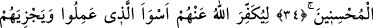

ALLAH KULUNA
KÂFİ DEĞİL MİDİR?
32. Allah’a karşı yalan uyduran, kendisine gelen gerçeği (Kur’an’ı) yalan
sayandan daha zalim kimdir? Kâfirlerin yeri cehennemde değil mi?
33. Doğruyu getiren ve onu tasdik edenler var ya, işte kötülükten sakınanlar
onlardır.
34. Onlar için Rableri yanında diledikleri her şey vardır. İşte bu, iyilik edenlerin
mükâfatıdır.
35. Böylece Allah, onların geçmişte yaptıkları en kötü hareketleri bile örtecek ve
yaptıklarının en güzeline denk olarak mükâfatlarını verecektir.
36. Allah kuluna kâfi değil midir? Seni O’ndan başkalarıyla korkutuyorlar. Allah,
kimi saptırırsa artık onun yolunu doğrultacak biri yoktur.